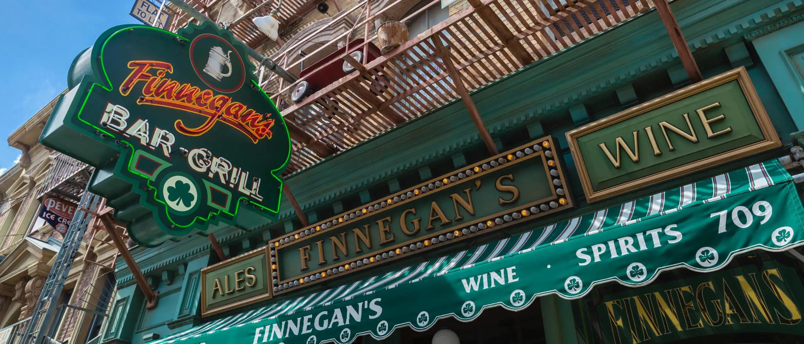
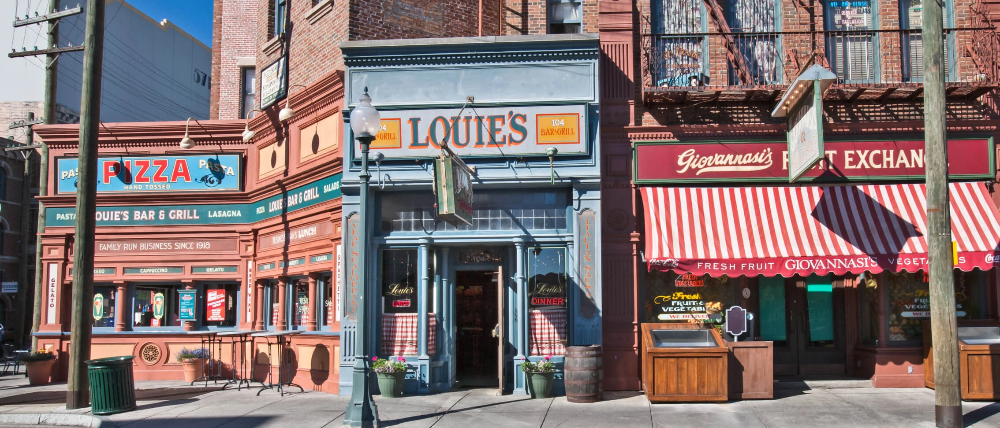

"This traditional Irish-American pub is both a lively bar and a full-service restaurant. Featuring authentic Irish dishes like Irish Fish & Chips, Corned Beef & Cabbage, and Dublin Lawyer as well as classic burgers, salads and more, this delicious destination offers a wide array of options to pair with your favorite pint."

"If you can't make it to your Nonna's house for dinner, there's a tasty alternative. Louie's is home to Italian favorites like pizza, pasta, meatball subs and salads, plus creamy gelato and Italian ice (available seasonally). Gather around in the spacious dining room or head outside to take in the New York vibe at a shaded table. Buon appetito."